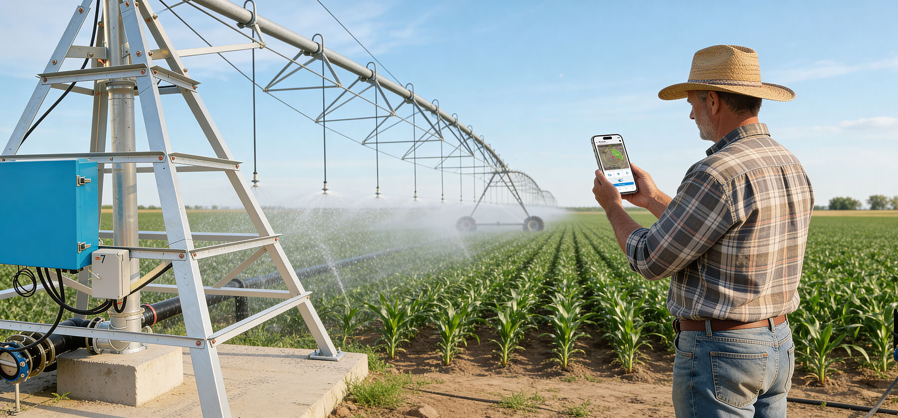
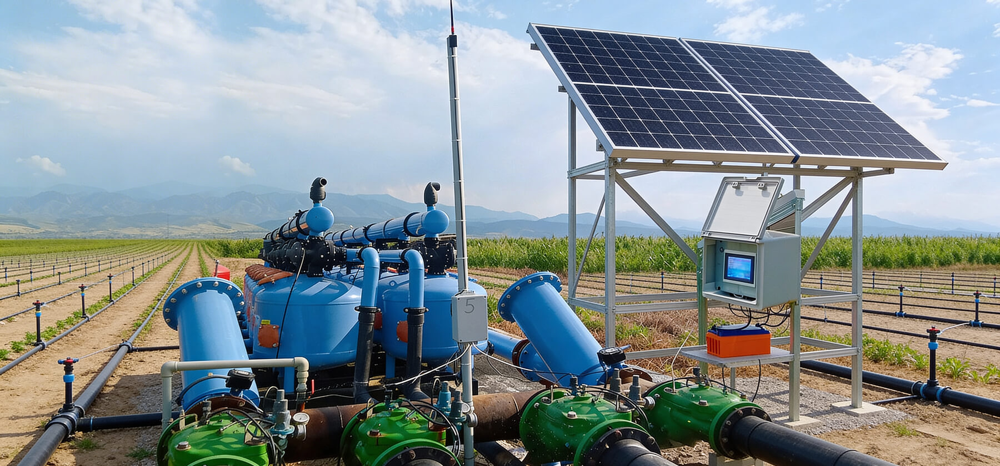

О нас
6 лет опыта
Мы, команда профессионалов, уже более 6 лет занимаемся разработкой систем удаленного управления дождевальными машинами и капельным орошением для сельскохозяйственных полей. Наши решения направлены на повышение эффективности использования водных ресурсов, улучшение урожайности и сокращение затрат для фермеров.
Разработано в Казахстане
Мы гордимся тем, что имеем собственное производство, расположенное в Казахстане, что позволяет нам учитывать специфику местных условий и потребностей.
Цель
Наша цель — предоставлять лучшие решения систем удаленного управления. Мы используем передовые технологии, проверенные временем материалы и тщательно продумываем каждый этап производства, чтобы обеспечить высокое качество и надёжность наших систем.
Надежность
С нами вы получаете надёжного партнёра, готового поддерживать вас на всех этапах внедрения и эксплуатации.
Система для дождевальных машин
Система удаленного управления включает возможности:
— Движение машиной.
— Мониторинг состояния машины и датчиков.
— Позиционирование машины на поле.
— IT систему.

Система для капельного полива
Система удаленного управления включает возможности:
— Переключения клапанов полива и полную автоматизацию полива согласно проекту.
— Общий радиус покрытия поля до 4х км. Возможное увеличение покрытия за счет репиторов.
— Одно RTU подключает от 1 до 4х клапанов полива, от 1 до 4х реле давления.
— RTU включает автономное питания от батареи до 8 мес. Универсальное зарядное устройство для любых условий подзарядки в офисе или авто.
